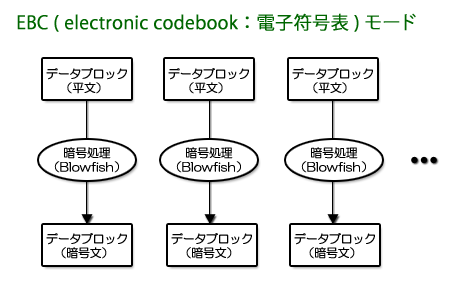

前バージョン（ver.1.**）までのアタッシェケースでは、 「ECB（electronic codebook：電子符号表）モード」と呼ばれる方式で暗号化していました。 単純にブロックごとに暗号化して、そのまま暗号化ファイルに書き込む方法です。 図に表すと、以下のような感じになります。

同じファイル、同じパスワードであれば、まったく同じ中身の暗号化ファイルが生成されます。 なのでこの方式では、その暗号化の特徴からブロック単位での解読がしやすくなってしまいます。 とはいっても、強力なBlowfishで暗号化しているので、そうそう破られるとは思えませんけども・・・
ただ、多少なりとも「検証のしやすさ」という弱点があることは否めません。 そこで、『アタッシェケース ver.2』から、「CBC（cipher block chaining：暗号ブロック連鎖）モード」 と呼ばれる方式で暗号化することにしました。簡単な図式にすると以下の通り。

上図を見れば明らかですが、まず最初に「初期化ベクトル（Initialization Vector）」と呼ばれる、 乱数によるブロックデータを生成します。
これをデータブロックと排他的論理和（XOR）をとってから、暗号化ファイルへ書き込んでいます。
つまり最初の乱数データを元に、データを連鎖的にからめ、巻き上げていくように、暗号化データを生成していきます。 この結果、最初に乱数値が与えられることで、同じファイル、同じパスワードで暗号化しても、毎回同じ中身になることはありません。 これにより、暗号化特徴からの「検証のしやすさ」の弱点をなくすことができます。
では、最初に乱数を与えて、どうして元に戻す（復号する）ことができるのでしょうか？ それは以下の図の通りです。

最初に与える乱数によるブロックデータも、ファイルに書き込まれているので、元に戻すことができるのです。
では、ファイルにその乱数によるブロックデータが書き込まれてあっても、解析の糸口にされたりしないのでしょうか？
それはできません。暗号化されたブロックデータをまず解析して復号化しない限り、 たとえ乱数データが見えていても解析の何の役に立たないからです。 乱数データが元となって、このチェインを解きほぐし、解析の端緒にすることはできません。